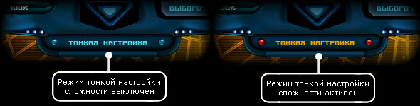
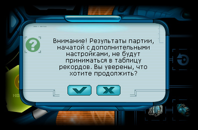
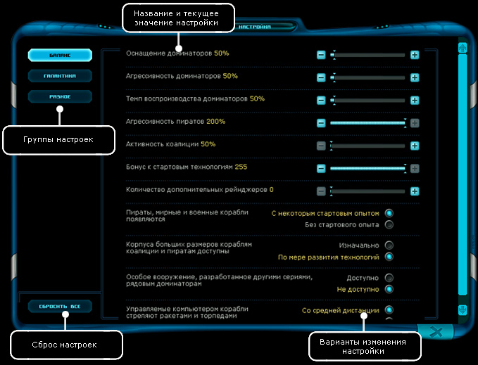

| Тонкая настройка Если при создании новой игры отметить пункт "Тонкая настройка", то после нажатия кнопки "далее", будет активирован режим тонкой настройки. |

|
 Если подобный ход событий вас устраивает, смело соглашайтесь и продолжайте. После подтверждения, окошко с вопросом пропадет, а при нажатии кнопки "Далее" появится окно тонкой настройки
Итак, после нажатия кнопки "Далее" при активном режиме тонкой настройки появляется окно:
 Существует несколько блоков, по которым распределены настройки: Баланс • Оснащение доминаторов - регулирует продвинутость корабельного оборудования доминаторов. • Агрессивность доминаторов - регулирует интенсивность атак стальных машин и их частоту. • Темп воспроизводства доминаторов - регулирует скорость постройки новых доминаторских кораблей. • Агрессивность пиратов - регулирует интенсивность атак пиратов и их частоту. • Активность коалиции - общий параметр, регулирующий частоту военных операций. Чем больше значение, тем активней коалиция пытается освобождать системы. На оборудование и число кораблей не влияет. • Бонус к старовым технологиям - регламентирует уровень, с которого начнет развиваться технология во Вселенной. При максимальном значении сразу же будет доступно самое совершенное оборудование. • Количество дополнительных рейнджеров - в среднем, максимальное количество рейнджеров в игре эквивалентно числу коалиционных систем, около одного рейнджера на систему. Параметр дает возможность увеличить их число. • Пираты, мирные и военные корабли появляются: с некоторым опытом / без стартового опыта - указывает, будут ли очки опыта у компьютерных пилотов при рождении, или нет. Во втором случае их навыки будут не развиты, а в первом же пилот сам сможет распределить очки и повысить навыки соответственно своим требованиям. • Корпуса больших размеров кораблям коалиции и пиратам доступны: Изначально / По мере развития технологий - определяет, как скоро компьютерные пилоты начнут использовать тяжелые, бронированные, но медленные крейсера: с начала игры, или позже. • Особое вооружение, разработанное другими сериями, рядовым доминаторам: доступно / не доступно - дифференцирует разработу доминаторских видов вооружения по сериям. При выборе варианта "не доступно" торпедный аппарат будет доступен лишь серии "блазер", ИМХО-9000 - серии "террон", а Вертикс - серии "Келлер". • Управляемые компьютером корабли стреляют ракетами и торпедами: со средней дистанции / с дальней дистанции - определяет, насколько далеко компьютерный пилот должен находиться от цели, чтобы использовать вооружение ракетного типа. Галактика • Количество астероидов - число астероидов в космосе, где 100% - нормальное значение. • Урон от звезд - повреждения, наносимые жаром звезды в непосредственной близости. • Относительное содержание в галактике аграрных планет - соотношение аграрных планет во Вселенной относительно планет с другими типами экономики. Макисмальное значение - 10, однако роль играет соотношение между тремя параметрами экономики планет. Так, если значение этого параметра будет равняться 10, а двух других 0, все планеты в Галактике будут аграрными. • Расположение стартовой системы игрока: В дальнем углу / в центре - определяет расположение сектора, в котором появится игрок. В случае выбора первой опции, сектор окажется на окраине Галактической карты, родная планета будет находиться в одной из столичных систем. В случае выбора варианта "в центре" игра начнется в случайной системе в секторе, не примыкающем к краям карты. • Относительное содержание в галактике индустриальных планет - соотношение индустриальных планет во Вселенной относительно планет с другими типами экономики. • Продажа нодов на пиратских станциях: Выключена / Включена - при включении данной опции за некоторую наличную сумму пираты с радостью продадут несколько контейнеров с поддельными нодами, которыми можно распоряжаться, как настоящими. Разное • Результат случайных событий: меняется при загрузке / не меняется - включение и отключения возможности изменить результат случайной генерации после загрузки. • Постройка станций: в производном месте системы / близко к центру - координаты размещения станции. • Вдали от игрока станции: пропускают выстрелы / сражаются как обычно - при выборе первого варианта, база будет атаковать агрессора лишь в трети случаев, что даст возможность комьютерным кораблям эффективней атаковать базы. При выборе второго варинта, стиль обороны ничем не будет отличаться от того, который видит игрок. • Космические станции могут получать новое оборудование: только с помощью игрока / из собственного магазина- ввиду того, что оборудование, с которым строится станция, останется на ней до конца эксплуатации, обновить его может лишь игрок, заплатив определенную сумму. Выбор варианта "из собственного магазина" меняет эту особенность поведения космических баз, позволяя им, с течением времени, обновлять свою экипировку прямо из собственного магазина оборудования. Однако, если игрок решится модернизировать базу, а данная опция активна, станция перестанет сама обновлять свое имущество. • Старые уникальные корпуса: в игре присутствуют / отсутствуют - три супер-корабля, Болид, Скала и Убийца, введенные в аддоне "Перезагрузка", в текущей версии, по умолчанию, не появляются, однако их появление можно вернуть, включив этот параметр. • Количество акриновых вещей в магазинах - процент оборудования в магазинах баз, обработанного акрином. При максимальном значении в магазинах продается только уникальное оборудование. • Количество нодов, выпадающих из доминаторов - процент падающих нодов из разбитых кораблей доминаторов. Базовое значение: 100% • Выпадение предметов: ограничено техническим уровнем / без ограничений - влияет на выпадающие из доминаторов вещи. • Максимальная стоимость выпадающих предметов - оказывает влияние на стоимость предметов, остающихся после гибели корабля. • Качество оборудования, выпадающего из противников в ЧД - указывает на уровень крутости вещей, которые остаются после победы над противниками в черных дырах. • Выносливость противников в ЧД - влияет на структуру противников в аркадной битве. • Урон противников в ЧД - определяет силу орудий противников из гипера. • Противники в ЧД: Действуют заодно / враждуют между собой - при выборе второго варината включается режим "все против всех" в ходе аркадной битвы, а первый же вариант стоит по умолчанию, когда единственным врагом для компьютерных пилотов является игрок. • Количество предметов в системе, после которого пилоты начинают их расстреливать - при достижении указанного количества пилоты в этой системе начнут отстрел контейнеров с грузом, однако, если число будет меньше, никто не тронет упавшие предметы. • Сражения с гиперпиратами при перелетах между системами: Выключены / Включены - включение переходов через гиперпространственные сгустки, как в первой части игры. • Продажа нодов на пиратских станциях: Выключена / Включена - при включении данной опции за некоторую наличную сумму пираты с радостью продадут несколько контейнеров с поддельными нодами, которыми можно распоряжаться, как настоящими. • Компьютерные игроки получают оборудование: через свои каналы / покупают в магазине - по прошествии времени любое оборудование устаревает, а потому компьютерные пилоты должны обновлять его, чтобы составить достойную конкуренцию друг другу. Для этого они могут пользоваться собственными каналами поставки, которые, зачастую, имеют более современное оборудование, чем в магазинах, что достигается выбором опции "через свои каналы". Если же выбрать вариант "Покупают в магазине", компьютерные пилоты окажутся в равных условиях с игроком, покупая оборудование только в магазине. Таким образом, новинки будут быстро сметаться с полок, игроку может и не достаться. Сбросить все - не блок настроек, а кнопка, позволяющая вернуть все параметры тонкой настройки в положение по умолчанию. После завершения настройки нужно нажать кнопку "Далее" в правом-нижнем углу экрана и тогда начнется генерация игровой вселенной по заданным параметрам. | |||||